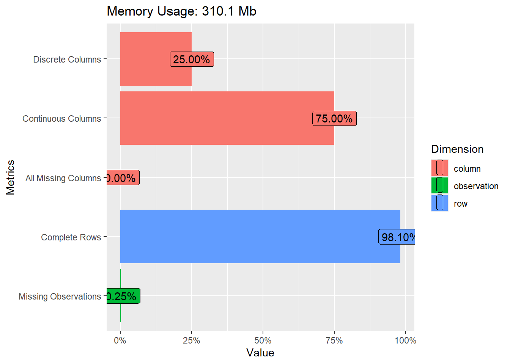
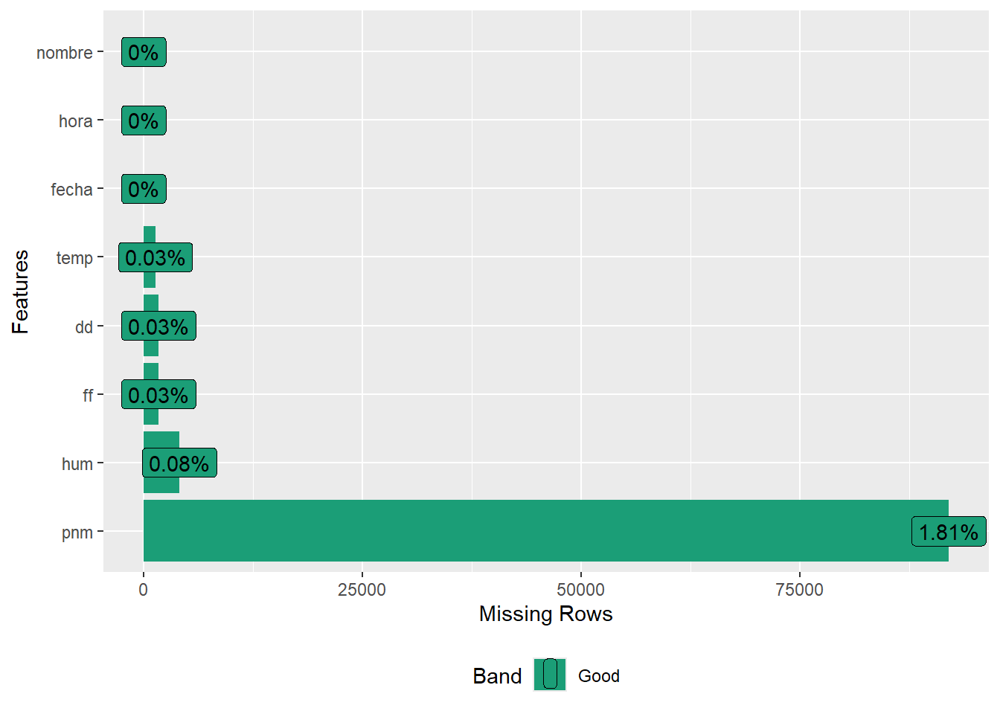
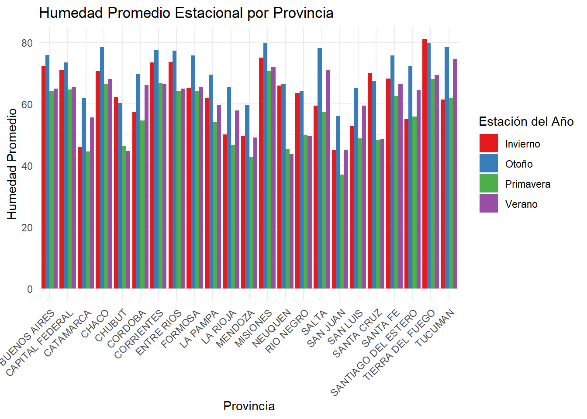
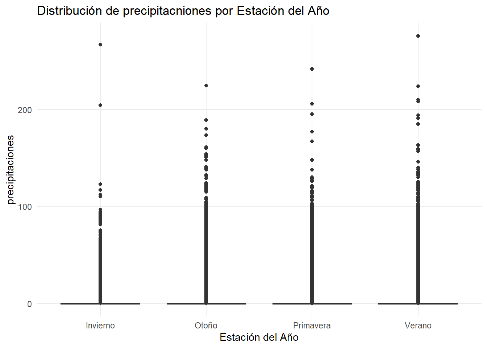

colnames(datos_smn) <-
tolower(colnames(datos_smn))
colnames(datos_estaciones) <-
tolower(colnames(datos_estaciones))
colnames(datos_precipitaciones) <-
tolower(colnames(datos_precipitaciones))final_presentation
Introducción
Este análisis explora datos meteorológicos de Argentina desde 2017 a 2023, aplicando técnicas de limpieza, manipulación y visualización en R. El objetivo es estructurar un conjunto de datos “sucios” para extraer estadísticas descriptivas y visualizaciones georeferenciadas, además de realizar pronósticos de corto plazo mediante modelado de series temporales.
Limpieza de datos
Pasamos el nombre de las columnas a minúsculas
Archivos proporcionados
- Datos Horarios Diarios: Archivos de texto con registros climáticos desde 2017 hasta 2023.
head(datos_smn) fecha hora temp hum pnm dd ff nombre
1 2018-01-01 0 20.4 58 1012.2 140 15 AEROPARQUE AERO
2 2018-01-01 1 19.7 63 1011.3 140 15 AEROPARQUE AERO
3 2018-01-01 2 20.2 61 1011.5 160 9 AEROPARQUE AERO
4 2018-01-01 3 19.4 63 1010.9 160 9 AEROPARQUE AERO
5 2018-01-01 4 18.8 67 1011.0 180 7 AEROPARQUE AERO
6 2018-01-01 5 18.7 68 1011.1 180 9 AEROPARQUE AERO- Estaciones Meteorológicas: Información detallada en smn_estaciones.csv.
head(datos_estaciones) nombre provincia altura nro latitud longitud
1 AEROPARQUE AERO CAPITAL FEDERAL 6 87582 -34.56667 -58.41667
2 AZUL AERO BUENOS AIRES 147 87641 -36.83333 -59.88333
3 BAHIA BLANCA AERO BUENOS AIRES 83 87750 -38.71667 -62.16667
4 BARILOCHE AERO RIO NEGRO 835 87765 -41.15000 -71.16667
5 BASE BELGRANO II ANTARTIDA 256 89034 -77.86667 -34.63333
6 BASE CARLINI (EX JUBANY) ANTARTIDA 11 89053 -62.23333 -58.66667- Precipitaciones: Datos adicionales en smn_precipitaciones.txt.
head(datos_precipitaciones) estacion fecha precipitacion..mm.
1 87007 1991-01-01 5.2
2 87007 1991-01-02 8
3 87007 1991-01-03 0
4 87007 1991-01-04 0
5 87007 1991-01-05 0
6 87007 1991-01-06 29.4SMN Data
# Contar filas y columnas
cat("Número de filas:", nrow(datos_smn), "\n")Número de filas: 5080309 cat("Número de columnas:", ncol(datos_smn), "\n")Número de columnas: 8 glimpse(datos_smn)Rows: 5,080,309
Columns: 8
$ fecha <date> 2018-01-01, 2018-01-01, 2018-01-01, 2018-01-01, 2018-01-01, 20…
$ hora <dbl> 0, 1, 2, 3, 4, 5, 6, 7, 8, 9, 10, 11, 12, 13, 14, 15, 16, 17, 1…
$ temp <dbl> 20.4, 19.7, 20.2, 19.4, 18.8, 18.7, 18.5, 19.0, 20.6, 22.0, 23.…
$ hum <dbl> 58, 63, 61, 63, 67, 68, 71, 69, 68, 66, 63, 63, 62, 57, 58, 58,…
$ pnm <dbl> 1012.2, 1011.3, 1011.5, 1010.9, 1011.0, 1011.1, 1011.3, 1011.3,…
$ dd <dbl> 140, 140, 160, 160, 180, 180, 180, 180, 140, 140, 110, 90, 90, …
$ ff <dbl> 15, 15, 9, 9, 7, 9, 7, 6, 13, 19, 20, 17, 19, 17, 15, 17, 22, 2…
$ nombre <chr> "AEROPARQUE AERO", "AEROPARQUE AERO", "AEROPARQUE AERO", "AEROP…summary(datos_smn) fecha hora temp hum
Min. :2018-01-01 Min. : 0.00 Min. :-39.90 Min. : 0.00
1st Qu.:2019-09-13 1st Qu.: 7.00 1st Qu.: 10.20 1st Qu.: 47.00
Median :2021-06-07 Median :12.00 Median : 16.80 Median : 66.00
Mean :2021-05-28 Mean :12.07 Mean : 16.32 Mean : 64.42
3rd Qu.:2023-02-07 3rd Qu.:18.00 3rd Qu.: 22.80 3rd Qu.: 84.00
Max. :2024-10-07 Max. :23.00 Max. : 45.60 Max. :100.00
NA's :1359 NA's :4097
pnm dd ff nombre
Min. : 9.3 Min. : 0.0 Min. : 0.00 Length:5080309
1st Qu.:1008.9 1st Qu.: 70.0 1st Qu.: 6.00 Class :character
Median :1014.1 Median :180.0 Median : 11.00 Mode :character
Mean :1068.3 Mean :175.9 Mean : 13.54
3rd Qu.:1020.1 3rd Qu.:270.0 3rd Qu.: 19.00
Max. :8500.0 Max. :990.0 Max. :183.00
NA's :91977 NA's :1706 NA's :1715 plot_intro(datos_smn)
plot_missing(datos_smn)
inspect_cat(datos_smn)# A tibble: 2 × 5
col_name cnt common common_pcnt levels
<chr> <int> <chr> <dbl> <named list>
1 fecha 2467 2021-02-05 0.0792 <tibble [2,467 × 3]>
2 nombre 136 CORDOBA AERO 1.16 <tibble [136 × 3]> inspect_num(datos_smn)# A tibble: 6 × 10
col_name min q1 median mean q3 max sd pcnt_na hist
<chr> <dbl> <dbl> <dbl> <dbl> <dbl> <dbl> <dbl> <dbl> <named list>
1 hora 0 7 12 12.1 18 23 6.52 0 <tibble>
2 temp -39.9 10.2 16.8 16.3 22.8 45.6 9.32 0.0268 <tibble>
3 hum 0 47 66 64.4 84 100 22.4 0.0806 <tibble>
4 pnm 9.3 1009. 1014. 1068. 1020. 8500 240. 1.81 <tibble>
5 dd 0 70 180 176. 270 990 131. 0.0336 <tibble>
6 ff 0 6 11 13.5 19 183 11.0 0.0338 <tibble> Gracias a la introducción a los datasets vemos que:
- SMN tiene datos faltantes en temp, dd, ff, hum, pnm
datos_smn %>%
filter(is.na(temp) | is.na(dd) | is.na(ff) | is.na(hum) | is.na(pnm)) %>% head() fecha hora temp hum pnm dd ff nombre
1 2018-01-01 21 NA NA 1006.5 230 24 CIPOLLETTI
2 2018-01-01 4 NA NA NA NA NA IGUAZU AERO
3 2018-01-01 9 15.7 46 NA 140 4 SAN CARLOS (MZA)
4 2018-01-01 9 16.9 66 NA 320 19 TRES ARROYOS
5 2018-01-01 11 20.1 NA 1012.8 180 13 TUCUMAN AERO
6 2018-01-01 1 NA NA NA NA NA VILLA DOLORES AEROdatos_smn <- datos_smn %>%
filter(!is.na(temp) & !is.na(dd) & !is.na(ff) & !is.na(hum) & !is.na(pnm))Despues de eliminar estos valores faltantes nos quedamos con: 4983626, 8
Y ahora tenemos que asegurarnos de que los valores que toma tengan sentido.
datos_smn <- datos_smn %>%
filter(
pnm >= 950 & pnm <= 1050,
hum >= 0 & hum <= 100,
ff >= 0 & ff <= 150,
dd >= 0 & dd <= 360,
temp >= -35 & temp <= 50
)Nuestros resultados:
dim(datos_smn)[1] 4547757 8plot_intro(datos_smn)Conversión de datos.
glimpse(datos_smn)Rows: 4,547,757
Columns: 8
$ fecha <date> 2018-01-01, 2018-01-01, 2018-01-01, 2018-01-01, 2018-01-01, 20…
$ hora <dbl> 0, 1, 2, 3, 4, 5, 6, 7, 8, 9, 10, 11, 12, 13, 14, 15, 16, 17, 1…
$ temp <dbl> 20.4, 19.7, 20.2, 19.4, 18.8, 18.7, 18.5, 19.0, 20.6, 22.0, 23.…
$ hum <dbl> 58, 63, 61, 63, 67, 68, 71, 69, 68, 66, 63, 63, 62, 57, 58, 58,…
$ pnm <dbl> 1012.2, 1011.3, 1011.5, 1010.9, 1011.0, 1011.1, 1011.3, 1011.3,…
$ dd <dbl> 140, 140, 160, 160, 180, 180, 180, 180, 140, 140, 110, 90, 90, …
$ ff <dbl> 15, 15, 9, 9, 7, 9, 7, 6, 13, 19, 20, 17, 19, 17, 15, 17, 22, 2…
$ nombre <chr> "AEROPARQUE AERO", "AEROPARQUE AERO", "AEROPARQUE AERO", "AEROP…str(datos_smn)'data.frame': 4547757 obs. of 8 variables:
$ fecha : Date, format: "2018-01-01" "2018-01-01" ...
$ hora : num 0 1 2 3 4 5 6 7 8 9 ...
$ temp : num 20.4 19.7 20.2 19.4 18.8 18.7 18.5 19 20.6 22 ...
$ hum : num 58 63 61 63 67 68 71 69 68 66 ...
$ pnm : num 1012 1011 1012 1011 1011 ...
$ dd : num 140 140 160 160 180 180 180 180 140 140 ...
$ ff : num 15 15 9 9 7 9 7 6 13 19 ...
$ nombre: chr "AEROPARQUE AERO" "AEROPARQUE AERO" "AEROPARQUE AERO" "AEROPARQUE AERO" ...datos_smn <- datos_smn %>%
mutate(
fecha = as.Date(fecha),
hora = sprintf("%02d:00", hora) %>% as.POSIXct(format = "%H:%M", tz = "UTC"),
temp = as.numeric(temp),
hum = as.numeric(hum),
pnm = as.numeric(pnm),
dd = as.numeric(dd),
ff = as.numeric(ff),
)
# Verificar las transformaciones
str(datos_smn)'data.frame': 4547757 obs. of 8 variables:
$ fecha : Date, format: "2018-01-01" "2018-01-01" ...
$ hora : POSIXct, format: "2024-11-08 00:00:00" "2024-11-08 01:00:00" ...
$ temp : num 20.4 19.7 20.2 19.4 18.8 18.7 18.5 19 20.6 22 ...
$ hum : num 58 63 61 63 67 68 71 69 68 66 ...
$ pnm : num 1012 1011 1012 1011 1011 ...
$ dd : num 140 140 160 160 180 180 180 180 140 140 ...
$ ff : num 15 15 9 9 7 9 7 6 13 19 ...
$ nombre: chr "AEROPARQUE AERO" "AEROPARQUE AERO" "AEROPARQUE AERO" "AEROPARQUE AERO" ...Datos Estaciones
# Contar filas y columnas
cat("Número de filas:", nrow(datos_estaciones), "\n")Número de filas: 123 cat("Número de columnas:", ncol(datos_estaciones), "\n")Número de columnas: 6 glimpse(datos_estaciones)Rows: 123
Columns: 6
$ nombre <chr> "AEROPARQUE AERO", "AZUL AERO", "BAHIA BLANCA AERO", "BARILO…
$ provincia <chr> "CAPITAL FEDERAL", "BUENOS AIRES", "BUENOS AIRES", "RIO NEGR…
$ altura <int> 6, 147, 83, 835, 256, 11, 24, 198, 12, 7, 207, 815, 94, 25, …
$ nro <int> 87582, 87641, 87750, 87765, 89034, 89053, 88963, 89055, 8896…
$ latitud <dbl> -34.56667, -36.83333, -38.71667, -41.15000, -77.86667, -62.2…
$ longitud <dbl> -58.41667, -59.88333, -62.16667, -71.16667, -34.63333, -58.6…summary(datos_estaciones) nombre provincia altura nro
Length:123 Length:123 Min. : 5.0 Min. :87007
Class :character Class :character 1st Qu.: 53.5 1st Qu.:87308
Mode :character Mode :character Median : 145.0 Median :87532
Mean : 331.5 Mean :87554
3rd Qu.: 455.0 3rd Qu.:87690
Max. :3459.0 Max. :89066
latitud longitud
Min. :-77.87 Min. :-72.05
1st Qu.:-38.18 1st Qu.:-66.47
Median :-34.53 Median :-63.37
Mean :-35.96 Mean :-62.83
3rd Qu.:-30.25 3rd Qu.:-58.92
Max. :-22.10 Max. :-34.63 plot_intro(datos_estaciones)plot_missing(datos_estaciones)inspect_cat(datos_estaciones)# A tibble: 2 × 5
col_name cnt common common_pcnt levels
<chr> <int> <chr> <dbl> <named list>
1 nombre 123 AEROPARQUE AERO 0.813 <tibble [123 × 3]>
2 provincia 25 BUENOS AIRES 22.0 <tibble [25 × 3]> inspect_num(datos_estaciones)# A tibble: 4 × 10
col_name min q1 median mean q3 max sd pcnt_na
<chr> <dbl> <dbl> <dbl> <dbl> <dbl> <dbl> <dbl> <dbl>
1 altura 5 53.5 145 332. 455 3459 457. 0
2 nro 87007 87308 87532 87554. 87690 89066 415. 0
3 latitud -77.9 -38.2 -34.5 -36.0 -30.2 -22.1 9.60 0
4 longitud -72.0 -66.5 -63.4 -62.8 -58.9 -34.6 5.32 0
# ℹ 1 more variable: hist <named list>Datos Precipitaciones
# Contar filas y columnas
cat("Número de filas:", nrow(datos_precipitaciones), "\n")Número de filas: 1362054 cat("Número de columnas:", ncol(datos_precipitaciones), "\n")Número de columnas: 3 glimpse(datos_precipitaciones)Rows: 1,362,054
Columns: 3
$ estacion <int> 87007, 87007, 87007, 87007, 87007, 87007, 87007, 87…
$ fecha <chr> "1991-01-01", "1991-01-02", "1991-01-03", "1991-01-…
$ precipitacion..mm. <chr> "5.2", "8", "0", "0", "0", "29.4", "25.5", "6", "3"…summary(datos_precipitaciones) estacion fecha precipitacion..mm.
Min. :87007 Length:1362054 Length:1362054
1st Qu.:87281 Class :character Class :character
Median :87497 Mode :character Mode :character
Mean :87482
3rd Qu.:87679
Max. :87938 plot_intro(datos_precipitaciones)plot_missing(datos_precipitaciones)inspect_cat(datos_precipitaciones)# A tibble: 2 × 5
col_name cnt common common_pcnt levels
<chr> <int> <chr> <dbl> <named list>
1 fecha 12317 2014-06-01 0.00837 <tibble [12,317 × 3]>
2 precipitacion..mm. 1217 0 75.2 <tibble [1,217 × 3]> inspect_num(datos_precipitaciones)# A tibble: 1 × 10
col_name min q1 median mean q3 max sd pcnt_na hist
<chr> <int> <dbl> <dbl> <dbl> <dbl> <int> <dbl> <dbl> <named list>
1 estacion 87007 87281 87497 87482. 87679 87938 256. 0 <tibble [19 × 2]>str(datos_precipitaciones)'data.frame': 1362054 obs. of 3 variables:
$ estacion : int 87007 87007 87007 87007 87007 87007 87007 87007 87007 87007 ...
$ fecha : chr "1991-01-01" "1991-01-02" "1991-01-03" "1991-01-04" ...
$ precipitacion..mm.: chr "5.2" "8" "0" "0" ...datos_precipitaciones <- datos_precipitaciones %>%
mutate(
estacion = as.integer(estacion), # Convertir 'estacion' a entero
fecha = as.Date(fecha, format = "%Y-%m-%d"), # Convertir 'fecha' a formato Date
precipitacion_mm = as.numeric(gsub(",", ".", precipitacion..mm.)) # Convertir 'precipitacion..mm.' a numérico
) %>%
select(-precipitacion..mm.) # Eliminar la columna original de precipitaciones
# Verificar las transformaciones
str(datos_precipitaciones)'data.frame': 1362054 obs. of 3 variables:
$ estacion : int 87007 87007 87007 87007 87007 87007 87007 87007 87007 87007 ...
$ fecha : Date, format: "1991-01-01" "1991-01-02" ...
$ precipitacion_mm: num 5.2 8 0 0 0 29.4 25.5 6 3 16.6 ...plot_intro(datos_precipitaciones)plot_missing(datos_precipitaciones)datos_precipitaciones %>%
filter(is.na(precipitacion_mm)) %>% head() estacion fecha precipitacion_mm
1 87007 1993-03-26 NA
2 87007 1993-10-06 NA
3 87007 1993-10-08 NA
4 87007 1995-10-24 NA
5 87007 1995-12-03 NA
6 87007 1997-01-01 NAdatos_precipitaciones <- datos_precipitaciones %>%
filter(!is.na(precipitacion_mm))plot_intro(datos_precipitaciones)Datos limpios! Ahora creamos nuevos datsets uniendo los anteriores.
colnames(datos_estaciones)[1] "nombre" "provincia" "altura" "nro" "latitud" "longitud" colnames(datos_precipitaciones)[1] "estacion" "fecha" "precipitacion_mm"colnames(datos_smn)[1] "fecha" "hora" "temp" "hum" "pnm" "dd" "ff" "nombre"df <- datos_estaciones %>%
inner_join(datos_smn, by = c("nombre" = "nombre")) %>%
inner_join(datos_precipitaciones, by = c("nro" = "estacion", "fecha" = "fecha"))Ahorramos un poco de memoria cerrando dataframes que no vamos a usar:
rm(datos_precipitaciones)
rm(datos_smn)
gc() used (Mb) gc trigger (Mb) max used (Mb)
Ncells 1601526 85.6 2788467 149.0 2788467 149.0
Vcells 62508180 476.9 195860021 1494.3 244596161 1866.2# Definir umbrales
temp_calor_umbral <- 35 # Umbral para ola de calor
temp_frio_umbral <- 5 # Umbral para ola de frío
precip_intensa_umbral <- 10 # Umbral para lluvias intensas (mm)
# Definir las fechas de inicio de cada estación
inicio_verano <- ymd("2024-12-21")
inicio_otoño <- ymd("2024-03-21")
inicio_invierno <- ymd("2024-06-21")
inicio_primavera <- ymd("2024-09-23")
# Agregar las columnas 'mes', 'día' y 'estación' al dataframe
df <- df %>%
mutate(
año = year(fecha),
mes = month(fecha),
dia = day(fecha),
estacion = case_when(
(fecha >= inicio_verano | fecha < inicio_otoño) ~ "Verano",
(fecha >= inicio_otoño & fecha < inicio_invierno) ~ "Otoño",
(fecha >= inicio_invierno & fecha < inicio_primavera) ~ "Invierno",
(fecha >= inicio_primavera & fecha < inicio_verano) ~ "Primavera"
),
has_rained = if_else(!is.na(precipitacion_mm) & precipitacion_mm > 0, 1, 0),
ola_calor = if_else(temp > temp_calor_umbral, 1, 0),
ola_frio = if_else(temp < temp_frio_umbral, 1, 0),
lluvia_intensa = if_else(precipitacion_mm > precip_intensa_umbral, 1, 0)
)
saveRDS(df, file = "clean_data.rds") provincias_geojson <- sf::st_read("rasters/provincias.json") # Reemplaza con la ruta correctaReading layer `provincias' from data source
`C:\Users\lmarquesini\Desktop\gitreps\an-lisis-datos-meteorol-gicos-smn\rasters\provincias.json'
using driver `GeoJSON'
Simple feature collection with 24 features and 8 fields
Geometry type: MULTIPOLYGON
Dimension: XY
Bounding box: xmin: -74 ymin: -90 xmax: -25 ymax: -21.78086
Geodetic CRS: WGS 84 provincias_geojson <- provincias_geojson %>%
mutate(nam = toupper(iconv(nam, to = "ASCII//TRANSLIT")))
provincias_geojson$nam [1] "CIUDAD AUTONOMA DE BUENOS AIRES"
[2] "NEUQUEN"
[3] "SAN LUIS"
[4] "SANTA FE"
[5] "LA RIOJA"
[6] "CATAMARCA"
[7] "TUCUMAN"
[8] "CHACO"
[9] "FORMOSA"
[10] "SANTA CRUZ"
[11] "CHUBUT"
[12] "MENDOZA"
[13] "ENTRE RIOS"
[14] "SAN JUAN"
[15] "JUJUY"
[16] "SANTIAGO DEL ESTERO"
[17] "RIO NEGRO"
[18] "CORRIENTES"
[19] "MISIONES"
[20] "SALTA"
[21] "CORDOBA"
[22] "BUENOS AIRES"
[23] "LA PAMPA"
[24] "TIERRA DEL FUEGO, ANTARTIDA E ISLAS DEL ATLANTICO SUR"Estructura de los datos
¿Con que nos quedamos?
Datos Estaciones
| Variable | Detalle |
|---|---|
Datos
| Variable | Detalle |
|---|---|
Análisis Descriptivo
Exploración de la variabilidad y distribución de temperatura, humedad, presión y viento.
# Mostrar estadísticas descriptivas de las variables de interés
df %>% dplyr::select(temp, hum, pnm, dd, ff, precipitacion_mm) %>% summary()Distribución de las variables
ggplot(df, aes(x = temp)) +
geom_histogram(binwidth = 1, fill = "skyblue", color = "black") +
labs(title = "Distribución de la Temperatura", x = "Temperatura (°C)", y = "Frecuencia")ggplot(df, aes(x = hum)) +
geom_histogram(binwidth = 5, fill = "lightgreen", color = "black") +
labs(title = "Distribución de la Humedad", x = "Humedad (%)", y = "Frecuencia")ggplot(df, aes(x = ff)) +
geom_histogram(binwidth = 5, fill = "lightblue", color = "black") +
labs(title = "Distribución de la Velocidad del Viento", x = "Velocidad (km/h)", y = "Frecuencia")
ggplot(df, aes(x = precipitacion_mm)) +
geom_histogram(binwidth = 0.5, fill = "purple", color = "black") +
labs(title = "Distribución de la Precipitación", x = "Precipitación (mm)", y = "Frecuencia")¿Donde estan las estaciones?
# Crear el mapa con Plotly y Mapbox
fig <- plot_ly(
data = datos_estaciones,
type = 'scattermapbox',
lat = ~latitud,
lon = ~longitud,
text = ~paste("Nombre:", nombre, "<br>Provincia:", provincia, "<br>Altura:", altura, "m"),
hoverinfo = 'text',
marker = list(size = 10, color = "blue", opacity = 0.7)
)
# Configurar el estilo de Mapbox
fig <- fig %>% layout(
mapbox = list(
style = "open-street-map", # Estilo de mapa
zoom = 4, # Nivel de zoom inicial
center = list(lat = -38, lon = -63)
),
title = "Estaciones Meteorológicas de Argentina"
)
# Mostrar el mapa
figNo scattermapbox mode specifed:
Setting the mode to markers
Read more about this attribute -> https://plotly.com/r/reference/#scatter-mode# Crear el mapa con Plotly y Mapbox
fig <- plot_ly(
data = datos_estaciones,
type = 'scattermapbox',
lat = ~latitud,
lon = ~longitud,
text = ~paste("Nombre:", nombre, "<br>Provincia:", provincia, "<br>Altura:", altura, "m"),
hoverinfo = 'text',
marker = list(
size = 10, # Tamaño uniforme para todos los puntos
color = ~altura, # Color según la altitud
colorscale = 'Viridis', # Escala de color perceptualmente uniforme
showscale = TRUE, # Mostrar la barra de escala
opacity = 0.7 # Opacidad para mejorar la visibilidad
)
)
# Configurar el estilo de Mapbox
fig <- fig %>% layout(
mapbox = list(
style = "open-street-map", # Estilo de mapa
zoom = 4, # Nivel de zoom inicial
center = list(lat = -38, lon = -63) # Centro aproximado de Argentina
),
title = "Estaciones Meteorológicas de Argentina"
)
# Mostrar el mapa
figNo scattermapbox mode specifed:
Setting the mode to markers
Read more about this attribute -> https://plotly.com/r/reference/#scatter-modeCorrelación de variables
# Seleccionar las variables numéricas para la matriz de correlación
numerical_vars <- df %>%
select(temp, hum, pnm, ff, dd, precipitacion_mm, altura, longitud, latitud)
# Calcular la matriz de correlación
cor_matrix <- cor(numerical_vars, use = "complete.obs")
# Visualización con plotly
plot_ly(z = cor_matrix,
x = colnames(cor_matrix),
y = rownames(cor_matrix),
type = "heatmap",
colors = colorRamp(c("blue", "white", "red"))) %>%
layout(title = "Matriz de Correlación")df_prov <- df %>%
group_by(provincia, año) %>%
summarise(humedad_promedio_anual = mean(hum),
precipitaciones_promedio_anual = mean(precipitacion_mm),
temp_promedio_anual = mean(temp)
)`summarise()` has grouped output by 'provincia'. You can override using the
`.groups` argument.humedad, temperatura, precipitaciones
ggplot(df_prov, aes(x = año, y = humedad_promedio_anual)) +
geom_line(color = "blue", size = 1) +
facet_wrap(~ provincia, ncol = 4) +
labs(
title = "Humedad Promedio Anual por Provincia",
x = "Año",
y = "Humedad Promedio"
) +
theme_minimal() +
theme(
plot.title = element_text(hjust = 0.5, size = 16), # Centra el título
axis.text.x = element_text(angle = 45, hjust = 1))Warning: Using `size` aesthetic for lines was deprecated in ggplot2 3.4.0.
ℹ Please use `linewidth` instead.ggplot(df_prov, aes(x = año, y = temp_promedio_anual)) +
geom_line(color = "blue", size = 1) +
facet_wrap(~ provincia, ncol = 4) +
labs(
title = "Temperatura Promedio Anual por Provincia",
x = "Año",
y = "Temperatura Promedio"
) +
theme_minimal() +
theme(
plot.title = element_text(hjust = 0.5, size = 16), # Centra el título
axis.text.x = element_text(angle = 45, hjust = 1))ggplot(df_prov, aes(x = año, y = precipitaciones_promedio_anual)) +
geom_line(color = "blue", size = 1) +
facet_wrap(~ provincia, ncol = 4) +
labs(title = "Precipitaciones Promedio Anual por Provincia",
x = "Año",
y = "Precipitaciones Promedio") +
theme_minimal()+
theme(
plot.title = element_text(hjust = 0.5, size = 16), # Centra el título
axis.text.x = element_text(angle = 45, hjust = 1) # Gira etiquetas del eje x para mayor legibilidad
)Análisis por estaciones
df_estacional_2 <- df %>%
group_by(provincia,
estacion) %>%
summarize(
temperatura_promedio = mean(temp, na.rm = TRUE),
humedad_promedio = mean(hum, na.rm = TRUE),
precipitaciones_promedio = mean(precipitacion_mm, na.rm = TRUE)
)`summarise()` has grouped output by 'provincia'. You can override using the
`.groups` argument.ggplot(df_estacional_2, aes(x = provincia, y = temperatura_promedio, fill = estacion)) +
geom_bar(stat = "identity", position = "dodge") +
labs(title = "Temperatura Promedio Estacional por Provincia",
x = "Provincia",
y = "Temperatura Promedio (°C)") +
theme_minimal() +
scale_fill_brewer(palette = "Set1", name = "Estación del Año")+
theme(axis.text.x = element_text(angle = 45, hjust = 1))ggplot(df_estacional_2, aes(x = provincia, y = humedad_promedio, fill = estacion)) +
geom_bar(stat = "identity", position = "dodge") +
labs(title = "Humedad Promedio Estacional por Provincia",
x = "Provincia",
y = "Humedad Promedio") +
theme_minimal() +
scale_fill_brewer(palette = "Set1", name = "Estación del Año")+
theme(axis.text.x = element_text(angle = 45, hjust = 1))
ggplot(df_estacional_2, aes(x = provincia, y = precipitaciones_promedio, fill = estacion)) +
geom_bar(stat = "identity", position = "dodge") +
labs(title = "Precipitaciones Promedio Estacional por Provincia",
x = "Provincia",
y = "Precipitaciones Promedio") +
theme_minimal() +
scale_fill_brewer(palette = "Set1", name = "Estación del Año")+
theme(axis.text.x = element_text(angle = 45, hjust = 1))
Boxplot por estación
ggplot(df, aes(x = estacion, y = temp)) +
geom_boxplot() +
labs(title = "Distribución de Temperatura por Estación del Año", x = "Estación del Año", y = "Temperatura (°C)") +
theme_minimal()ggplot(df, aes(x = estacion, y = hum)) +
geom_boxplot() +
labs(title = "Distribución de Humedad por Estación del Año", x = "Estación del Año", y = "Humedad (%)") +
theme_minimal()# Boxplot de precipitaciones por Estación del Año
ggplot(df, aes(x = estacion, y = precipitacion_mm)) +
geom_boxplot() +
labs(title = "Distribución de precipitacniones por Estación del Año", x = "Estación del Año", y = "precipitaciones") +
theme_minimal()
df_max_prec <- df %>%
select(nombre, provincia, precipitacion_mm, fecha) %>%
arrange(desc(precipitacion_mm)) %>%
head(10)
df_max_temp <- df %>%
select(nombre, provincia, temp, fecha) %>%
arrange(desc(temp))%>%
head(10)
df_max_hum <- df %>%
select(nombre, provincia, hum, fecha) %>%
arrange(desc(hum))%>%
head(10)Efecto del niño y la niña
# Años de eventos (deberías actualizar estas listas con información confiable)
años_la_nina <- c(1998:2001,2005,2006,2007,2008,2022) # Agrega todos los años de la Niña
años_el_nino <- c(2002,2003,2009, 2010, 2014,2015,2016,2023,2024) # Agrega todos los años de El Niño
# Agregar una columna al dataset para clasificar el tipo de año
datos_eventos <- df %>%
mutate(tipo_evento = case_when(
as.numeric(year(fecha)) %in% años_el_nino ~ "El Niño",
as.numeric(year(fecha)) %in% años_la_nina ~ "La Niña",
TRUE ~ "Neutro"
))promedios_evento <- datos_eventos %>%
group_by(tipo_evento, provincia) %>%
summarize(
temperatura_promedio = mean(temp, na.rm = TRUE),
humedad_promedio = mean(hum, na.rm = TRUE),
velocidad_viento_promedio = mean(ff, na.rm = TRUE),
precipitacion_promedio = mean(precipitacion_mm, na.rm = TRUE)
)`summarise()` has grouped output by 'tipo_evento'. You can override using the
`.groups` argument.ggplot(promedios_evento, aes(x = provincia, y = temperatura_promedio, fill = tipo_evento)) +
geom_bar(stat = "identity", position = "dodge") +
labs(title = "Temperatura Promedio por Provincia durante El Niño, La Niña y Años Neutros",
x = "Provincia",
y = "Temperatura Promedio (°C)") +
theme_minimal() +
scale_fill_brewer(palette = "Set1") +
theme(axis.text.x = element_text(angle = 45, hjust = 1))ggplot(promedios_evento, aes(x = provincia, y = precipitacion_promedio, fill = tipo_evento)) +
geom_bar(stat = "identity", position = "dodge") +
labs(title = "Precipitaciones Promedio por Provincia durante El Niño, La Niña y Años Neutros",
x = "Provincia",
y = "Precipitaciones Promedio") +
theme_minimal() +
scale_fill_brewer(palette = "Set1") +
theme(axis.text.x = element_text(angle = 45, hjust = 1))ggplot(promedios_evento, aes(x = provincia, y = humedad_promedio, fill = tipo_evento)) +
geom_bar(stat = "identity", position = "dodge") +
labs(title = "Humedad Promedio por Provincia durante El Niño, La Niña y Años Neutros",
x = "Provincia",
y = "Humedad Promedio") +
theme_minimal() +
scale_fill_brewer(palette = "Set1") +
theme(axis.text.x = element_text(angle = 45, hjust = 1))El evento de la niña y el niño basandonos en las variables y sus valores dados en el dataset, para la temperatura no hay un patron que siga pero para la humedad y precipitaciones si que hay un pequeño patron el cual es que en los años de la niña la humedad y las precipitaciones, bajan con respecto a los años del niño y los neutros.
Por otro lado, tambien podemos observar que la estacion impacta significativamente en las mediciones que tenemos en los datos . Por ejemplo en verano suele haber mas precipitaciones que en las demas estaciones, y para la humedad suele haber un poco mas en otoño que en las otras.
Y en los promedios anuales de las variables temperatura, precipitaciones y humedad se puede ver que no existe una gran variacion entre los años para ninguna de las variables aunque hay exepciones como en Chaco para las precipitaciones.
Y las provincias donde se registraron los valores mas altos para las variables mencionadas anteriormente son: para la temperatura santiago del estero y formosa, para la humedad en todas las provincias hubo 100% de humedad.
Tambien se puede ver que en precipitaciones hay muchos valores atipicos, al igual que en la temperatura pero en la humedad hay muy pocos outliers
¿Qué estación registró la temperatura más alta?
# Filtrar las 30 estaciones con la temperatura más alta
top_30_temp <- df %>%
group_by(nombre) %>%
summarise(max_temperatura = max(temp, na.rm = TRUE), .groups = 'drop') %>%
arrange(desc(max_temperatura)) %>%
slice_head(n = 30)
# Crear el gráfico de barras
ggplot(top_30_temp, aes(x = reorder(nombre, max_temperatura), y = max_temperatura)) +
geom_bar(stat = "identity", fill = "steelblue") + # Puedes cambiar el color
coord_flip() + # Gira el gráfico para mejor visibilidad
labs(title = "Temperaturas Máximas por Estación",
x = "Estación",
y = "Temperatura Máxima (°C)") +
theme_minimal() +
theme(axis.text.y = element_text(size = 8)) # Ajusta el tamaño de la etiqueta del eje y si es necesarioEstaciones con temperaturas más altas
# Filtrar las 30 estaciones con la temperatura más alta y obtener sus coordenadas
top_30_temp <- df %>%
group_by(nombre) %>%
summarise(max_temperatura = max(temp, na.rm = TRUE),
latitud = mean(latitud, na.rm = TRUE),
longitud = mean(longitud, na.rm = TRUE), .groups = 'drop') %>%
arrange(desc(max_temperatura)) %>%
slice_head(n = 30)
# Crear el gráfico de mapa utilizando top_30_temp
fig <- plot_ly(data = top_30_temp,
type = 'scattermapbox',
lat = ~latitud,
lon = ~longitud,
mode = 'markers',
marker = list(size = 8, color = top_30_temp$max_temperatura, colorscale = 'Viridis', opacity = 0.7),
text = ~paste(nombre, ": ", max_temperatura, "°C")) # Texto al pasar el mouse
# Establecer las opciones de diseño y el estilo del mapa
fig <- fig %>%
layout(
title = "Ubicación de las Estaciones con Temperaturas Máximas",
mapbox = list(
style = 'open-street-map', # Alternativas: "carto-positron", "stamen-terrain", "dark"
zoom = 4, # Nivel de zoom
center = list(lat = mean(top_30_temp$latitud), lon = mean(top_30_temp$longitud)) # Centrar en promedio de tus datos
)
)
# (Opcional) Establecer el token de Mapbox si tienes uno
if (!is.null(mapbox_token)) {
fig <- fig %>%
layout(mapbox = list(accesstoken = mapbox_token))
}
# Mostrar el gráfico
figEl análisis muestra que las temperaturas máximas más altas en Argentina se registran en el norte y centro del país, lideradas por estaciones como Santiago del Estero y Las Lomitas con valores cercanos a 45 °C. También se observan picos elevados en zonas del litoral y del centro, como Resistencia y Córdoba, y, sorprendentemente, en áreas más al sur como San Antonio Oeste y Bahía Blanca. Esto resalta la gran variabilidad climática en Argentina, donde el calor extremo no se limita solo al norte, sino que afecta diversas regiones del país.
#Estaciones con mayor y menor altitud.
# Filtrar las 10 estaciones más al norte y al sur, asegurando que los nombres sean únicos
top_norte <- df %>%
arrange(desc(latitud)) %>%
distinct(nombre, .keep_all = TRUE) %>% # Mantener solo nombres únicos
slice_head(n = 10) %>%
mutate(grupo = "Norte")
top_sur <- df %>%
arrange(latitud) %>%
distinct(nombre, .keep_all = TRUE) %>% # Mantener solo nombres únicos
slice_head(n = 10) %>%
mutate(grupo = "Sur")
# Combinar los datos
estaciones_extremas <- bind_rows(top_norte, top_sur)
# Crear el gráfico de mapa
fig <- plot_ly(data = estaciones_extremas,
type = 'scattermapbox',
lat = ~latitud,
lon = ~longitud,
mode = 'markers',
marker = list(size = 10, opacity = 0.7),
text = ~paste(nombre, "<br>Grupo:", grupo), # Texto al pasar el mouse
color = ~grupo, # Diferenciar por grupo
colors = c("red", "blue")) # Colores para los grupos
# Establecer las opciones de diseño y el estilo del mapa
fig <- fig %>%
layout(
title = "Ubicación de las 10 Estaciones Más al Norte y Más al Sur",
mapbox = list(
style = 'open-street-map', # Alternativas: "carto-positron", "stamen-terrain", "dark"
zoom = 4, # Nivel de zoom
center = list(lat = mean(estaciones_extremas$latitud),
lon = mean(estaciones_extremas$longitud)) # Centrar en promedio de tus datos
)
)
# (Opcional) Establecer el token de Mapbox si tienes uno
if (!is.null(mapbox_token)) {
fig <- fig %>%
layout(mapbox = list(accesstoken = mapbox_token))
}
# Mostrar el gráfico
fig# Paso 1: Calcular la temperatura promedio por estación (solo para las estaciones del norte y sur ya filtradas)
temp_promedio_extremas <- df %>%
filter(nombre %in% estaciones_extremas$nombre) %>%
group_by(nombre) %>%
summarise(temp_promedio = mean(temp, na.rm = TRUE)) %>%
left_join(estaciones_extremas %>% select(nombre, grupo), by = "nombre")
# Reordenar el factor 'nombre' según la temperatura promedio
temp_promedio_extremas <- temp_promedio_extremas %>%
mutate(nombre = factor(nombre, levels = temp_promedio_extremas %>%
arrange(desc(temp_promedio)) %>%
pull(nombre)))
# Paso 2: Crear el gráfico comparativo
ggplot(temp_promedio_extremas, aes(x = nombre, y = temp_promedio, fill = grupo)) +
geom_bar(stat = "identity", position = "dodge") +
theme_minimal() +
labs(title = "Temperaturas Promedio de Estaciones del Norte y Sur",
x = "Estación",
y = "Temperatura Promedio (°C)",
fill = "Grupo") +
theme(axis.text.x = element_text(angle = 45, hjust = 1))Tras analizar las temperaturas promedio de estaciones meteorológicas en el norte y sur de Argentina, se observa una marcada diferencia entre ambas regiones. Las estaciones del norte, como Bernardo de Irigoyen AERO (27.8 °C) y Las Lomitas (25.22 °C), presentan temperaturas promedio considerablemente altas, con valores que oscilan entre 19.7 °C y 27.8 °C. Este patrón refleja la influencia del clima cálido característico de la región.
Por otro lado, las estaciones del sur muestran temperaturas significativamente más bajas. Estaciones como Río Grande B.A. (5.89 °C) y Ushuaia AERO (6.17 °C) registran promedios en un rango de 5.89 °C a 13.59 °C, debido a las condiciones frías de la región patagónica y su proximidad a zonas de mayor latitud.
Conclusión: Este análisis resalta el contraste climático en Argentina, donde las estaciones del norte presentan temperaturas más cálidas en comparación con las del sur, alineándose con la variación latitudinal y las características geográficas del país.
# Paso 1: Filtrar el dataset y agrupar por fecha de apertura (con días completos)
df_filtrado <- df %>%
arrange(nombre, fecha) %>% # Ordenar por estación y fecha
group_by(nombre) %>%
slice_head(n = 1) %>% # Tomar el primer registro por estación (fecha de apertura)
ungroup() # Eliminar el agrupamiento
# Paso 2: Cambiar el formato de la fecha
df_filtrado <- df_filtrado %>%
mutate(fecha_formateada = format(fecha, "%Y-%m-%d")) # Cambiar el formato a 'año-mes-día'
# Paso 3: Contar la cantidad de estaciones por fecha de apertura
df_fecha_apertura <- df_filtrado %>%
group_by(fecha_formateada) %>%
summarise(cantidad_estaciones = n(), .groups = "drop") %>%
arrange(fecha_formateada) # Ordenar por fecha
# Paso 4: Graficar la cantidad de estaciones por fecha de apertura
ggplot(df_fecha_apertura, aes(x = fecha_formateada, y = cantidad_estaciones)) +
geom_bar(stat = "identity", fill = "skyblue") +
theme_minimal() +
labs(title = "Cantidad de Estaciones por Fecha de Apertura",
x = "Fecha de Apertura",
y = "Cantidad de Estaciones") +
theme(axis.text.x = element_text(angle = 45, hjust = 1)) # Rotar las etiquetas del eje x para mejorar la legibilidad# Paso 1: Filtrar el dataset original y obtener el día de apertura para cada estación
df_filtrado <- df %>%
arrange(nombre, fecha) %>% # Ordenar por estación y fecha
group_by(nombre) %>%
slice_head(n = 1) %>% # Tomar el primer registro por estación (fecha de apertura)
ungroup()
# Paso 2: Contar la cantidad de estaciones por fecha de apertura (usando la columna `fecha` existente)
df_fecha_apertura <- df_filtrado %>%
group_by(fecha) %>%
summarise(cantidad_estaciones = n(), .groups = "drop") %>%
arrange(desc(cantidad_estaciones)) # Ordenar por cantidad de estaciones de mayor a menor
# Mostrar el resultado
print(df_fecha_apertura)# A tibble: 9 × 2
fecha cantidad_estaciones
<date> <int>
1 2018-01-01 90
2 2019-10-21 4
3 2019-10-22 2
4 2018-01-03 1
5 2020-06-23 1
6 2022-03-03 1
7 2022-11-20 1
8 2023-10-15 1
9 2024-01-12 1Es posible que en nuestro conjunto de datos existieran nombres de estaciones repetidos, lo cual podría haber generado inconsistencias al momento de analizar las fechas de apertura de las estaciones. Para evitar estos problemas, realizamos un procedimiento de filtrado en el que seleccionamos únicamente la primera fecha de apertura registrada para cada estación, asegurando así que cada estación fuera representada solo una vez en el análisis
# Paso 1: Crear una columna que agrupe estaciones con nombres similares
df_filtrado_estaciones <- df_filtrado %>%
mutate(grupo_estacion = substr(nombre, 1, 20)) # Agrupar por las primeras 5 letras del nombre
# Paso 2: Ordenar y agrupar para identificar fechas de apertura y cierre
df_abiertas_cerradas <- df %>%
group_by(nombre) %>%
summarise(
fecha_apertura = min(fecha, na.rm = TRUE),
fecha_cierre = max(fecha, na.rm = TRUE),
.groups = "drop"
) %>%
# Convertir fechas a formato día-mes-año
mutate(
fecha_apertura = format(fecha_apertura, "%d-%m-%Y"),
fecha_cierre = format(fecha_cierre, "%d-%m-%Y")
) %>%
arrange(fecha_apertura) # Ordenar por fecha de apertura
# Mostrar el resultado
df_abiertas_cerradas# A tibble: 102 × 3
nombre fecha_apertura fecha_cierre
<chr> <chr> <chr>
1 AEROPARQUE AERO 01-01-2018 20-09-2024
2 AZUL AERO 01-01-2018 20-09-2024
3 BAHIA BLANCA AERO 01-01-2018 20-09-2024
4 BENITO JUAREZ AERO 01-01-2018 20-09-2024
5 BOLIVAR AERO 01-01-2018 20-09-2024
6 CATAMARCA AERO 01-01-2018 20-09-2024
7 CERES AERO 01-01-2018 20-09-2024
8 CHAMICAL AERO 01-01-2018 20-09-2024
9 CHAPELCO AERO 01-01-2018 20-09-2024
10 CHEPES 01-01-2018 20-09-2024
# ℹ 92 more rowsLa distribución de fechas muestra una apertura masiva de estaciones el 1 de enero de 2018, con 90 estaciones, posiblemente indicando el inicio de una gran fase de expansión. En octubre de 2019, hubo una pequeña segunda ola con seis estaciones más abiertas en dos días. A partir de ahí, las aperturas se volvieron esporádicas, con solo una estación añadida en varias fechas hasta 2024. Tambien pudimos ver que las estaciones “USPALLATA”, “TERMAS DE RIO HONDO AERO”, “MAQUINCHAO”, “TINOGASTA”, “BERNARDO DE IRIGOYEN AERO”, tienen registros de un dia solo lo cual indicaria que estas estaciònes pudieron haber sido filtrada de manera incorrecta o no tienen suficientes datos
#Segmentar por condiciones climaticas similares.
# Filtrar y seleccionar las variables relevantes (temperatura, humedad, latitud, longitud)
df_clustering <- df %>%
select(temp, hum, latitud, longitud) %>%
drop_na() # Eliminar filas con NA
# Verificar que latitud y longitud son numéricas
df_clustering$latitud <- as.numeric(df_clustering$latitud)
df_clustering$longitud <- as.numeric(df_clustering$longitud)
# Normalización de los datos para evitar que latitud y longitud dominen el clustering
df_clustering_normalized <- df_clustering %>%
mutate(across(c(temp, hum), ~ (.-min(.)) / (max(.) - min(.))))
# Realizar el clustering usando K-means con 6 clusters (puedes ajustar el número)
set.seed(123) # Para reproducibilidad
kmeans_result <- kmeans(df_clustering_normalized, centers = 5)
# Agregar los resultados del clustering al dataframe original
df$cluster <- as.factor(kmeans_result$cluster)
# Calcular las condiciones promedio por cluster (temperatura y humedad)
df_clustered_avg_location <- df %>%
group_by(cluster) %>%
summarise(
latitud_promedio = mean(latitud, na.rm = TRUE),
longitud_promedio = mean(longitud, na.rm = TRUE),
temperatura_promedio = mean(temp, na.rm = TRUE),
humedad_promedio = mean(hum, na.rm = TRUE)
)
# --- Opción 1: Visualizar los centros de los clusters en un mapa ---
fig <- plot_ly(data = df_clustered_avg_location,
type = 'scattermapbox',
lat = ~latitud_promedio,
lon = ~longitud_promedio,
mode = 'markers',
marker = list(size = 15, opacity = 0.8),
text = ~paste("Cluster:", cluster,
"<br>Temp promedio:", round(temperatura_promedio, 1), "°C",
"<br>Humedad promedio:", round(humedad_promedio, 1), "%"),
color = ~cluster,
colors = "RdYlBu")
fig <- fig %>%
layout(
title = "Centros de Clusters Climáticos",
mapbox = list(
style = 'open-street-map',
zoom = 4,
center = list(lat = mean(df_clustered_avg_location$latitud_promedio, na.rm = TRUE),
lon = mean(df_clustered_avg_location$longitud_promedio, na.rm = TRUE))
)
)
figLuego de normalizar los datos y aplicar un algoritmo de clustering, identificamos varios grupos (clusters) de estaciones climáticas con características similares en diferentes regiones. El primer cluster corresponde al sur, donde la temperatura promedio es de 8.2°C y la humedad promedio es del 64%. Un segundo cluster abarca la Patagonia, con una temperatura promedio de 13.6°C y una humedad de 55.3%. Un tercer grupo corresponde a la región de Buenos Aires, con una temperatura promedio de 16.8°C y una humedad del 68.7%. El cuarto cluster se encuentra en Córdoba, donde la temperatura promedio es de 18.5°C y la humedad alcanza el 57.7%. Finalmente, un último cluster en Misiones presenta una temperatura promedio de 21°C y una humedad del 70.2%. Estos clusters nos han permitido segmentar las estaciones climáticas según sus características meteorológicas y su localización geográfica
Análisis de Eventos Extremos
Estudio de la frecuencia, duración y patrones de olas de calor, frío y lluvias intensas.
Estacionalidad y Ciclos Anuales
Análisis de los cambios en temperatura y precipitación a lo largo de las estaciones.
Eventos Consecutivos y Persistentes
Evaluación de eventos consecutivos como días de altas temperaturas o lluvias continuas.
Análisis Geoespacial
Comparación de patrones de clima entre distintas regiones geográficas.
Clustering de Estaciones Meteorológicas
Agrupación de estaciones según sus perfiles de temperatura, humedad y precipitación.
Pronóstico Semanal
Proyección diaria de lluvia, temperaturas, viento y humedad para la próxima semana.